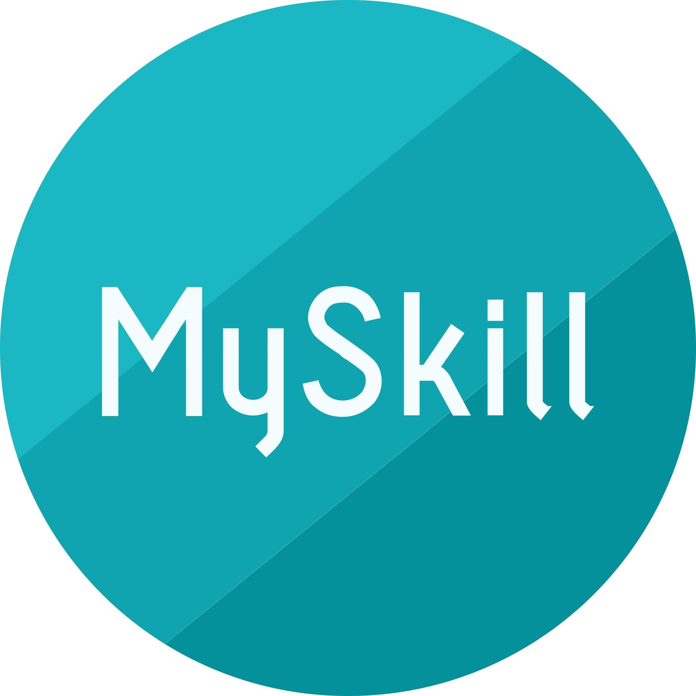

← Back to Portfolio
Data Analyst Project Detail
Data Analyst Project List
Certification Projects Showcase
SQL, Python, and Dashboard Projects from MySkill Data Analytics Courses
Duration Project : 4 months

YayaPL1 Channel Data Analyst Project
SQL, Python, and Dashboard Projects to Analyze Youtube Channel
Duration Project : 6 months